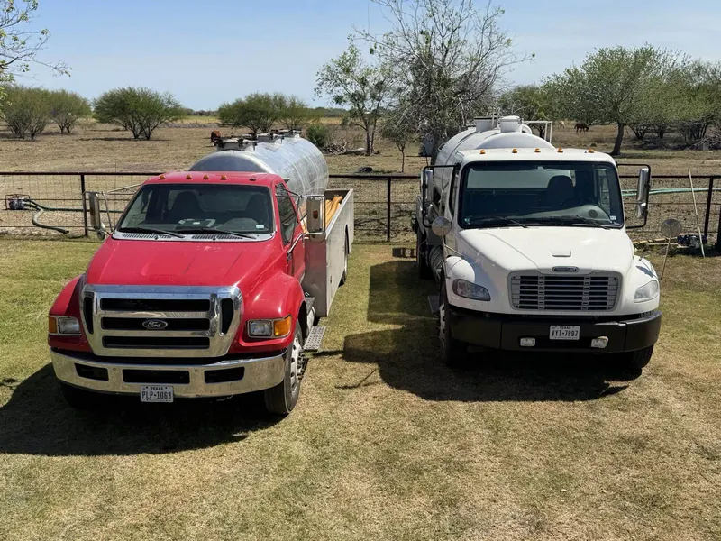
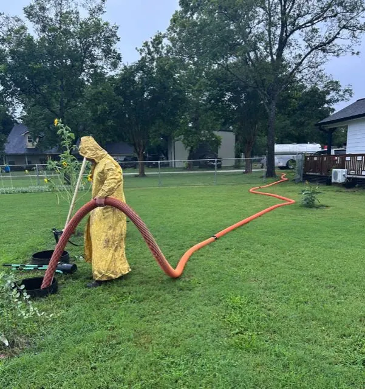

5.0
★★★★★
Average across 76 Google reviews from Victoria and the surrounding counties.

Emergency septic pumping out of Victoria, TX. Toilets backing up, drains gurgling, sewage in the yard or tub — don't wait on a callback. Call, and you'll get a straight answer about today from the man who drives the truck.
Real price over the phone before we roll. Tank pumped to the floor so it stays fixed.
Most of our calls are people whose house is backing up, and we treat it that way. Three things that help while the truck is on its way:

Tell us where you are, roughly what size tank you've got and what it's doing. You'll get a price and a straight answer on timing.
We locate the tank, open every lid and vacuum it out completely — solids off the bottom, not just liquid off the top.
Lids seated, ground raked over, hoses off your grass. Your drains are working again and the yard doesn't look like anything happened.
If it's backing up, a phone call beats an email every time. Mon–Fri 8am–5pm, and after hours the same number still reaches Matt.
Can't call right now? Email Matt and he'll reply with a price.
layne@onepumpseptic.comPut your town and what it's doing in the email — but if it's backing up, calling is faster.
Heads up: we pump and clean tanks only — no repairs. If it turns out to be a repair, the tank still has to be pumped first, and we'll tell you straight what we're seeing.
Some of these name Layne — Matt's father, who started OnePump. Matt runs it now, with the same trucks and the same number.
Average across 76 Google reviews from Victoria and the surrounding counties.
"Could not have asked for better service from these folks. I was in need of an emergency septic service and they got here quickly and took care of the job in no time at all. They made very clean work of a dirty job and didn't leave any mess behind. I would recommend these guys to anyone!"
"This family run business was great. Made it out really fast. Got me ready for the plumber. Was really friendly, and even told me what he thought was wrong, to give the plumber a place to start. Would highly recommend this business."
"Extremely knowledgeable, very friendly and courteous. Layne was prompt (same day) and did a very thorough job. Would recommend his service to anyone!"
Based on Boehm Road in Victoria; we'll run 60 to 70 miles to reach a tank. Near the edge of the map? Call anyway — if we can't get to you today we'll say so quickly, not leave you waiting.
Most days, yes — it's the question we get more than any other. Call as early as you can and we'll do our best to get you taken care of right away. If we genuinely can't reach you today we'll tell you on the phone rather than leave you waiting.
It depends on the size of your tank and how far out you are, so we quote over the phone before we roll. The figure you're given is the figure you pay — nothing added afterwards for it being urgent.
Usually. A full tank — sludge built up on the bottom — is the most common reason a house backs up, and pumping it to the floor clears it. If it's a failed pump or a broken line instead, we'll tell you straight on the phone or on site so you can get the right person out.
No. We pump tanks and that's it — no repairs, no installs, no part replacement. That's also why we've got no reason to find "problems" that aren't there.
Call anyway. The number on this page reaches Matt directly, and he takes calls at all hours. Ads run 8am–5pm, but the phone doesn't stop.
A full tank doesn't get better on its own — it gets into the house. The estimate is free and the call reaches the man with the truck.